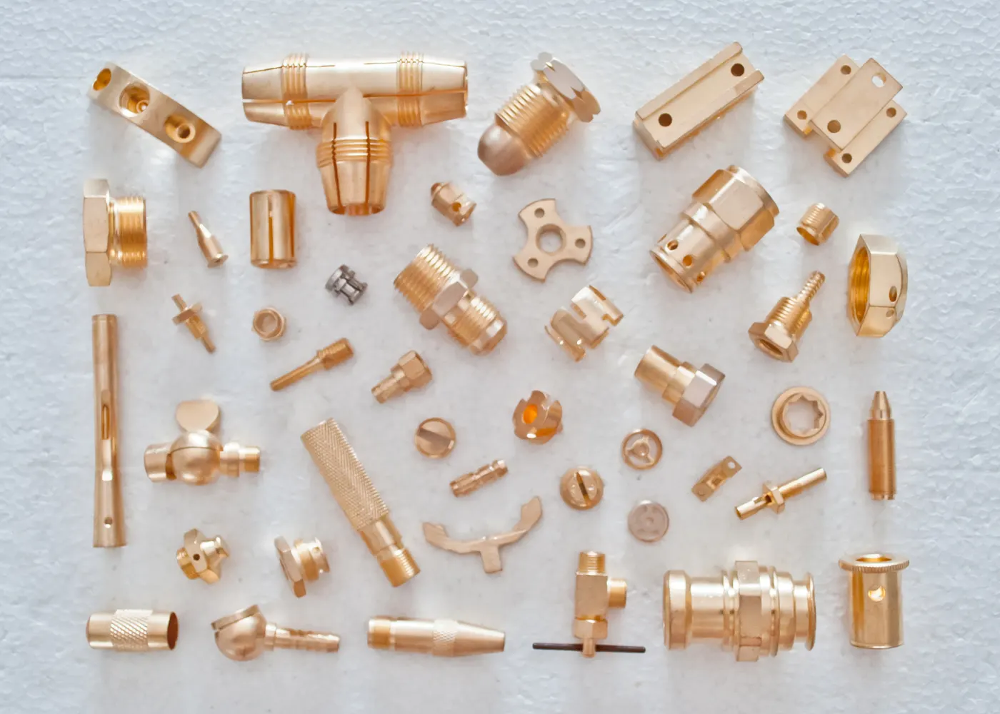
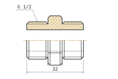
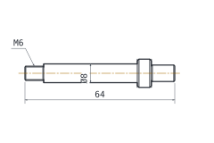

Forged brass components
Hot-forged brass blanks from 25 g to 1.0 kg, CNC-machined to your drawing. Forging first saves material and machining time on parts with branches, flanges or large heads.

- Process
- Hot forging, then CNC turning, drilling and threading
- Weight range
- 25 g – 1.0 kg
- Tolerance
- ±0.05 mm on machined features
- Threads
- M · BSP/BSPT · NPT · UNC/UNF
- Material
- CW617N (CuZn40Pb2, forging brass); DZR on request
- Finish
- Shot-blasted, natural or bright; or plated in our plant: nickel, tin or zinc
- Documents
- EN 10204 3.1 mill certificate and final inspection report with every batch; PPAP on request · Quality
- Volumes
- From a few thousand pieces to millions a year
Forged parts we make
Made to your drawing or sample.
- Valve and fitting bodies
- Tees, elbows and manifolds
- Forged automotive components
- Forged and CNC-turned parts
When to forge
- Forge
- Parts with a large flange, side branches or a big head compared with the body: forging puts material only where it is needed.
- Turn from bar
- Parts of mostly one diameter: brass turned components.
Examples
Current photos; replaced after the photo shoot.

Buying forgings from AirGrip
Is a forged part cheaper than one machined from bar?
Forging adds a die but cuts material and machining time, so for branched or flanged parts in volume it is usually cheaper. If both routes make sense, the quote shows both.
Lead times, MOQ, NDA and delivery terms: Ordering & shipping.
Related




Send the drawing of your forged part
Include the annual volume: it decides whether a forging die pays off.